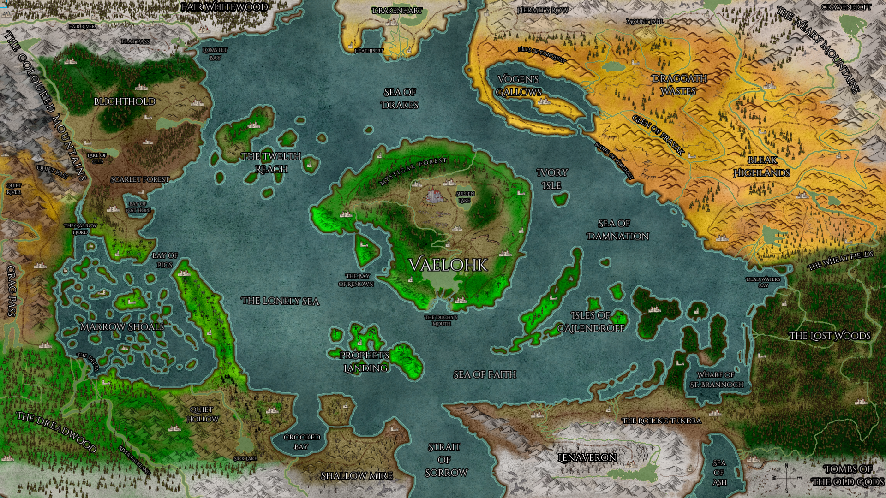

The Map

Vaelohk — the centre island, and the name the world took from it.
THE FOUR CORNERS
- INDUSTRY
- Nw — Blighthold (castle in mountains), Scarlet Forest.
- PROWESS
- Ne — Draggath Wastes (tundra), Bleak Highlands, Glen of Pravak, Drakenheart, Sea of Drakes.
- CUNNING
- Sw — Dreadwood, Marrow Shoals.
- PIETY
- S/se — Lenaveron and the Lost Woods.
THE SEA
One sea, and no name for the whole of it. Each shore names the water it can see, and the ring is wide enough that they are all describing something different.
- The Lonely Sea
- A vast open sea of doldrums.
- The Sea of Drakes
- Tumultuous. Mythology holds that flying drakes destroy ships to protect it. Borders the Prowess corner.
- The Sea of Miracles
- Where miracles are said to have happened.
- The Sea of Damnation
- Fraught with Drakteni and Sarkopekt — where the damned are sent to meet their deserved fate. The name is honest by accident: what is actually out there is a conquest fleet and mercenary free companies of unknown allegiance. Whether the damnation is theological or just Drakteni siege-ships depends on who you ask.
WIP —> From the northern cliffs it is the Sea of Drakes, and the men there will tell you why ships do not come back. From the pilgrim coast it is the Sea of Miracles, and they will tell you what happened there, and when, and to whom. From the eastern shore it is the Sea of Damnation, which is where the damned are sent — though what is actually out there is a war fleet and a company of mercenaries who will not say who is paying them. The water does not care. It is wide enough that all three are describing something true.
WIP —> Around it, four corners and a centre. Ice and bad soil in the north-east, where the old empire died and the warbands still fight over what killed it. Mountains and mines in the north-west, where a people who survived a plague of the earth itself now supply half the world. Warrens and shoals in the south-west, where there is no law and never has been. Cathedrals and cold in the south, where a church that no longer governs its own frontier is still certain it does.
WIP —> And in the middle, an island the world is named for, where the Duke sits and says nothing, and everyone who matters is trying to stand nearer to him.
PLACES BELONGING TO NOBODY
- Sea of Ash
- A sea completely contaminated by Ash. Crossable, but it yields nothing — no fish, no drinking water. You carry everything across it or you do not arrive. Some say it is the ash of the old gods.
Gazetteer
Every named place and body of water with recorded lore, and who holds it.
| Place | Held by | Description |
|---|---|---|
| Bay of Pigs | Prezish | A weaponized false exonym. The dismissive name was given by outsiders, and the locals keep it deliberately — a bay named for filth attracts no attention and lowers a merchant's guard. Prezish seat: pirates, smugglers, brokers, money-lenders and profiteers. The name is the first move of the con. |
| Bleak Highlands | Kraghs | Pastoralists, living as historical Highlanders did — herding clans under a chief they swear fealty to. The northern limit of Vorghith expansion: Vogen, their general, drove up to here in 1136 and no further. Also a Sarkopekt free-company node. When the Pincer was organised it was Highland clans who enlisted in the Mason-King's mercenary company in exchange for his services — paying in fealty-service rather than coin, which is how their oaths already work. |
| Cailendroff Isles | Cailendroffs | Home of the exiled pretender's people, driven out during the Great Fracture and never possessing the means to return — the harder now with Sarkopekt free companies patrolling the Sea of Damnation under unknown allegiance. |
| Crag Pass | Ithiss | A natural chokepoint of narrow paths, labyrinths, and slot canyons, found and controlled by the Ithiss from their underground network — reached in secret, held without garrison. Where Trusteki caravans learned the dangers of the south, and the route by which Ithiss who wanted another life ventured north. |
| Heathport | Drakteni | A natural port with plentiful mines, found by Trusteki who built ships and fled east after the Blight — where they met Prowess and became the Drakteni. Now one end of the Ithiss-to-Prezish illicit route (Heathport to the Wharf of St. Brannoch). |
| Ivory Isle | Sarkopekt | Known historically as the seat of Mason-King Karalius II — shipwright and builder of masonry citadels, the expensive solution that always worked. His wealth was recognised, not self-styled. Now a Sarkopekt node sitting between the seat of power and the war-market. |
| Prophet's Landing | Ossensteins | A beautiful tropical archipelago — paradise as bait. Where the false god manifested among the excommunicated (expelled for failing to recognise the Tetramorph). The only place in the world where Esselantheum is spoken aloud; saying it is the sales pitch. |
| Scarlet Forest | Trusteki | The soil south of Blighthold turned blood red after the Blight, and Scarlet trees grew from it — a verdant swelling, trees reaching the size of the old wood of Fair Whitewood within a single generation. Produces the best wood in the world. The most damaged land became the most valuable, and they would never fight the earth again. |
| Shallow Mire / Quiet Hollow | Shassolin | Swampy wetland at the end of the Strait of Sorrow. Shassolin territory — administrators and missionaries of the false religion, stranded frontier clergy abandoned and repurposed. |
| The Lonely Sea | Sea | A vast open sea of doldrums. |
| The Sea of Damnation | Sea | Fraught with Drakteni and Sarkopekt — where the damned are sent to meet their deserved fate. The name is honest by accident: what is actually out there is a conquest fleet and mercenary free companies of unknown allegiance. Whether the damnation is theological or just Drakteni siege-ships depends on who you ask. |
| The Sea of Drakes | Sea | Tumultuous. Mythology holds that flying drakes destroy ships to protect it. Borders the Prowess corner. |
| The Sea of Miracles | Sea | Where miracles are said to have happened. |
| Sea of Ash | Unclaimed | A sea completely contaminated by Ash. Crossable, but it yields nothing — no fish, no drinking water. You carry everything across it or you do not arrive. Some say it is the ash of the old gods. |